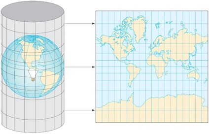
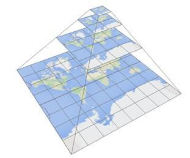

Cesium卫星地图和高程数据切片经验总结
最近研究在Cesium中调用自定义的图像和地形，不借助任何GIS系统（如Arcgis、天地图等），方便在网络不好或离线的情况下使用。下面对整个过程进行总结。
基础知识
地图服务提供方法
目前互联网地图服务商提供的地图服务分成两种[3]：
- 图像瓦片地图服务
这种方法目前最常见，其提供的是图片格式的瓦片，在客户端将拼接成真正的地图。 - 矢量瓦片地图服务
这种方法正在发展，其提供矢量的瓦片数据，然后在客户端进行渲染，是今后的发展方向。
地图服务在使用过程中需要获取特定经纬度所在区域的瓦片和获取瓦片上像素点对应的经纬度，因此需要进行经纬度坐标与瓦片坐标、像素坐标的相互转换。
经纬度与瓦片编号互换
互联网地图的经纬度坐标与瓦片坐标相互转换只与该地图商的墨卡托投影和瓦片编号的定义有关，跟地图商采用的大地坐标系标准无关。
经纬度与瓦片像素互换
转换方式与地图商采用的大地坐标系有关。国际标准的经纬度坐标是WGS84。Open Street Map、外国版的Google Map都是采用WGS84；高德地图使用的坐标系是GCJ-02；百度地图使用的坐标系是BD-09。
地图投影
地图投影，是指按照一定的数学法则将地球椭球面上的经纬网转换到平面上，使地面的地理坐标与平面直角坐标建立起函数关系。这是绘制地图的数学基础之一。由于地球是一个不可展的球体，使用物理方法将其展平会引起褶皱、拉伸和断裂，因此要使用地图投影实现由曲面向平面的转化。
麦卡托投影法
麦卡托投影法 (Mercator projection)，又称麦卡托投影法、正轴等角圆柱投影，是一种等角的圆柱形地图投影法。本投影法得名于法兰德斯出身的地理学家杰拉杜斯·麦卡托，他于1569年发表长202公分、宽124公分以此方式绘制的世界地图。在以此投影法绘制的地图上，经纬线于任何位置皆垂直相交，使世界地图可以绘制在一个长方形上。由于可显示任两点间的正确方位，航海用途的海图、航路图大都以此方式绘制。在该投影中线型比例尺在图中任意一点周围都保持不变，从而可以保持大陆轮廓投影后的角度和形状不变（即等角）；但麦卡托投影会使面积产生变形，极点的比例甚至达到了无穷大。

瓦片切割和瓦片坐标
对于经过墨卡托投影为平面的世界地图，在不同的地图分辨率(整个世界地图的像素大小)下，通过切割的方式将世界地图划分为像素为256px/256px的地图单元，划分成的每一块地图单元称为地图瓦片。其特定如下：
- 具有唯一的瓦片等级（Level）和瓦片坐标编号（tileX, tileY）。
- 瓦片分辨率为256*256。
- 最小的地图等级是0，此时世界地图只由一张瓦片组成。
- 瓦片等级越高，组成世界地图的瓦片数越多，可以展示的地图越详细。
- 某一瓦片等级地图的瓦片是由低一级的各瓦片切割成的4个瓦片组成，形成了瓦片金字塔。

过程总结
将自定义图像和地形以Web形式发布后，在cesium中调用自定义图像和地形很简单，代码如下，关键是图像和地形的获取和处理。
1 | var tmsImageryProvider=Cesium.createTileMapServiceImageryProvider({ |
卫星图像的获取和处理
卫星图像获取可以使用一些相关软件，如水经注、LocaSpaceViewer、SXearth等。其原理通常是从一些地图服务商下载地图瓦片后重新拼接，再分割成对应格式的瓦片。拼接的图像最好输出为tif格式，因为tif格式可以在头部包含一些信息，例如地理坐标等信息，以方便后续的瓦片切割，以及被GIS系统直接识别导入。为使切割后的瓦片能够被Cesium直接调用，应采用标准TMS方式。
通常卫星图像下载软件提供多种瓦片分割方式，如果能直接进行标准TMS瓦片分割最好不过，如果不可以进行标准TMS分割，则可使用GDAL。
GDAL是地理空间数据抽象库的简称，是一个地理空间数据的格式转换及处理工具。文章最后将详细介绍其安装使用方法。使用GDAL进行卫星图像瓦片分割主要使用gdal2tiles.py工具。具体步骤如下：
- 选取之前下载拼接的最大分辨率的tif卫星图像
- 使用如下命令切割卫星图片,将自动生成瓦片金字塔。
1 | gdal2tiles.py <image> <tilesdir> |
或者参考瓦片底图：TIF影像金字塔切片处理及加载。
卫星图像蓝边的处理
卫星图像在浏览的过程中有可能会出现蓝边，其原因是瓦片下载过程中的边界没有处理好。解决思路是严格按照瓦片的经纬度设定边界。可通过google-maps-coordinates-tile-bounds-projection查询特定级别瓦片的各个顶点的经纬度。
地形的获取和处理
Cesium支持多种地形provider来接收地形数据瓦片[8]：
- Cesium Terrain Server——高分辨率的全球地形数据，支持地形光照和水流效果。地形瓦片提交给客户端的数据的格式用的是quantized-mesh v1.0。
- Esri ArcGIS Image Server——从Esri影像服务里的高度图中产生地形数据集。详情见Cesium里的ArcGisImageServerTerrainProvider.
- VR-TheWorld Server——从一个VR-TheWorld服务里的高度图中产生地形数据。它们的托管服务器有全球90米的数据，包括深度测量。
- Ellipsoid——是Cesium默认的地形provider，是一个光滑的椭球面，没有现实的地形，地形高度为0。
常用的CesiumTerrainProvider支持两种格式的地形：一种是quantized-mesh格式的地形数据，另一种是基于高度图技术的DEM。前一种技术是Cesium独有不开放，因此将使用DEM数据在Cesium中渲染地形。
DEM数据是数字高程模型，是描述每个点位的高程数据，没有其他附加信息[9]。DEM数据在ArcGIS中打开只能看到是灰度图。通过相关软件可直接下载各大地图服务商的高程数据，但没有在Cesium中加载成功。下面介绍一种经过验证可在Cesium中成功加载地形的方法：
- 下载地形数据。可以从地理空间数据云下载地形数据。注册登录后，在首页选择“DEM 数字高程数据”，在选择“GDEMV2 30M 分辨率数字高程数据”。
- 合并地形数据。使用GDAL下的gdal_merge.py工具将下载的地形数据合并成一个Tif文件。
1 | gdal_merge.py -o out.tif input1.tif input2.tif |
- 切割地形数据。使用牛人制作的gdal2srtmtiles.py脚本分割地形数据。编辑gdal2srtmtiles.py，在最后设置高程文件和输出目录。参考链接工具gdal2srtmtiles的安装使用。或者参考地形数据：TIF地形转terrain格式。
- 发布地形服务。把terrain_tiles直接放到与 Cesium同端口的Tomcat或IIS站点。
下（不能跨域），即可发布服务。 需要在Web Server中增加配置 .terrain文件的 Content-Type设为 application/octet-stream，同时拷贝“覆盖至生成tiles结果”目录中的 layer.json文件和0文件夹至生成结果目录下，比如我当前是 terrain_tiles目录下。
注意：地形切片至少要到14级，地形分辨率太低将导致卫星影像失真。
GDAL的安装使用
GDAL(Geospatial Data Abstraction Library)是一个在X/MIT许可协议下的开源栅格空间数据转换库。该项目由Frank Warmerdam教授于1998年发起。 它利用抽象数据模型来表达所支持的各种文件格式。 它还有一系列命令行工具来进行数据转换和处理。 OGR(OpenGIS Simple Features Reference Implementation)是GDAL项目的一个子项目， 提供对矢量数据的支持。 一般把这两个库合称为GDAL/OGR，或者简称为GDAL。
GDAL安装方法之一
GDAL不推荐从源码编译安装，建议从gisinternals下载gdal-203-1911-x64-core.msi、GDAL-2.3.0.win-amd64-py2.7.msi直接二进制安装。安装步骤如下：
- 安装python2.7。安装完成后配置环境变量，在path中添加 C:\Python27;
- 安装gdal-203-1911-x64-core.msi。安装完成后，设置环境变量GDAL_DATA，值为C:\Program Files\GDAL\gdal-data\，修改环境变量PATH，增加C:\Program Files\GDAL;
- pip install numpy。这是为了使用地形切割的脚本gdal2srtmtiles.py。
- 安装GDAL-2.3.0.win-amd64-py2.7.msi。
注意：当瓦片过多时，会报“OverflowError: range() result has too many items”的错误，而且python2已不再维护，因此不建议采用该方法安装GDAL。
GDAL安装方法之二
OSGeo4W是用于开源GIS项目的Windows安装程序。 开源的本质意味着许多项目/程序相互依赖才能实现功能。 GDAL就是一个很好的例子。 几乎所有的开源GIS项目都在某种程度上使用GDAL来读写数据。 但是因为Windows是一个封闭的平台，所以它没有像基于Unix的操作系统那样开发软件包管理器。 因此，如果使用GRASS和QGIS的独立安装程序安装它们，则最终会进行2次GDAL安装。 添加3或4个以上的开源安装，最终您将获得十几个GDAL安装，此外还有一个仅用于GDAL的安装。
这就是OSGeo4W的用处。它可以跟踪开源GIS软件包的共享需求，因此QGIS和GRASS可以共享一次GDAL安装。 它还跟踪版本，因此您可以简单地升级程序。
从官网GDAL2Tiles Project找到 OSGeo4W 的下载链接，下载OSGeo4W并安装即可。
参考链接
- Imagery-Layers-Tutorial, by cesiumjs
- Terrain-Tutorial, by cesiumjs
- 国内主要地图瓦片坐标系定义及计算原理, by CntChen
- 地图投影, by wikipedia
- Hexo博客搭建之在文章中插入图片, by Yan Yinhong
- 用ArcMap给遥感影像(tif格式)加入地理坐标，by wbz810.
- GDAL，by gdal
- Cesium之地形(1), by Super洛伽
- Cesium中地形数据的加载，by CrazyGIS
- OpenLayers之多源数据加载二：瓦片地图原理,by giser.
- cesium加载离线tms切片,by nygfcn.
- TIFF,by wikipedia.
- Tile_Map_Service_Specification,by osgeo.
- TIFF图像文件格式详解(1),by xdyang.
- TIFF图像文件格式分析,by windcsn.
- 1. 地理数据处理软件包GDAL简介,by osgeo.cn.
- google-maps-coordinates-tile-bounds-projection,by maptiler.
- geopy,by theonegis.
- 工具gdal2srtmtiles的安装使用,by 四域公子.
- 地形数据：TIF地形转terrain格式,by mars3d.
- 瓦片底图：TIF影像金字塔切片处理及加载,by mars3d.